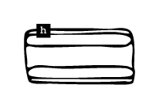

<!DOCTYPE html>
<html lang="kr"></html>
<head>
  <meta charset="UTF-8">
  <meta http-equiv="X-UA-compitable" content="IE-edge">
  <meta name="viewport" content="width=device-width", initial-scale="1.0">
  <title>h</title>
  <link href="h_.css" rel="stylesheet">
  <script type="text/javascript">
    document.oncontextmenu = function(){return false;}
    function redirectToRandomPage() { 
            // Array of specific pages on the website 
            const pages = [ 
                'index3.html', 
                'index10.html', 
                'index17.html', 
                'index24.html' 
            ]; 
            // Generate a random index 
            const randomIndex = Math.floor(Math.random() * pages.length); 
            // Redirect to the randomly selected page 
            window.location.href = pages[randomIndex]; 
    }
  </script>
</head>
<body oncontextmenu="return false" onselectstart="return false" ondragstart="return false" onkeydown="return false">
  <div class="box-container">
      <div class="box-item1">
        <div class="map">
          <a onclick="redirectToRandomPage()">
            
          </a>
          <p>논문 발췌</p>
          <div class="comment">
            <p>해러웨이의 &lt;사이보그 선언문&gt;을 독해하는 데 도움이 되는 논문의 일부를 발췌한 페이지. 다양한 논의를 통해 해러웨이의 세계관을 깊이 이해할 수 있다.</p>
          </div>
      </div>
    </div>
    <div class="box-item2">
      <div class="textbox-center">
        <div class="textbox1">
          <h2>SF영화에 나타난 여성 캐릭터 변화 연구<br>(할리우드 영화를 중심으로)</h2>
        </div>
        <div class="textbox3">
          <p>중부대학교 대학원<br>문화콘텐츠학과<br>왕림<br>2021년 8월</p>
        </div>
        <br>
        <div class="textbox2">
          <p>할리우드 SF영화 속 여성 캐릭터의 역사적 변화를 분석한 결과, 과거의 여성 캐릭터는 남성의 시각적 쾌감을 만족시키는 존재에 불과하였으나 시대의 흐름과 과학기술의 발전으로 인해 독립적인 캐릭터로서의 변화 추세를 알 수 있었다.</p>
        </div>
        <div class="textbox2">
          <p>연구 결과 인공지능을 소재로 한 SF영화에서 여성주의에 대한 성찰뿐만 아니라 인공지능이 미래 발전에 대한 사고를 하며, 사이버 공간의 전통적인 성별 질서가 무너졌다. 남녀 양성의 의미가 사라졌으며, 인공지능은 데이터를 교환하여 자손을 번식할 수 있다. 심지어 영생까지도 가능하기 때문에 출산은 더 이상 여성 존재의 중요한 의미가 아니며, 여성도 더 이상 남성 지배의 속박에 얽매일 필요가 없다고 할 수 있다.</p>
        </div>
        <div class="textbox2">
          <p>시몬 드 보부아르(Simone de Beauvoir)는 그의 저서 '제 2의 성'에서 사람들은 보통 'Man(남성)'으로 일반적인 사람을 지칭하는데 남성은 양성과 중간성에 모두 해당하였고, 여성은 음성의 대표자일 뿐이라고 지적하였다.</p>
        </div>
        <div class="textbox2">
          <p>독일의 철학자 니체(Friedrich Wilhelm Nietzsche)가 “남성은 자신을 위한 여성 이미지를 창조하였고, 여성은 이를 모방하여 자신을 창조한다.”라고 말했다. 우리가 여기서 연구하는 여성 이미지는 대부분 남성 중심의 주관적 이미지 아래의 여성 이미지이며 이러한 조력자 신분으로 존재하는 이미지는 동시에 현실 사회의 여성 의식에 영향을 주었다.</p>
        </div>
        <div class="textbox2">
          <p>기독교 문화에서 혐오하는 것은 여성의 육체이다. 여성이 육체를 포기하고, 남자의 종복으로 된다면 성도가 될 수 있다.</p>
        </div>
        <div class="textbox2">
          <p>여성주의 용어인 “자웅동체(<span class="chinese">雌雄同體</span>)”는 ‘버지니아 울프(Virginia Woolf)’가 1929년에 출판한 ‘자신의 한 칸 방’에서 사무엘 테일러 콜레리지(Samuel Taylor Coleridge)의 “위대한 머리는 자웅동체여야 한다.”라는 말을 인용하여 처음 사용하였다.</p>
        </div>
        <div class="textbox2">
          <p>‘캐롤린 헤일브룬’(Carolyn Heilbrun)은 자웅동체는 남녀의 성별 정신의 융합을 의미한다고 주장한다. 그녀는 “자웅동체는 성별 간의 조화로운 정신을 나타낸다. 또한 개인에게 개방된 경험의 범위는 여자는 공격적일 수도 있고, 남자는 부드러울 수도 있다. 그것은 인간이 행동 규범이나 습관을 고려하지 않고, 그들의 위치를 선택할 수 있는 범위를 암시한다.”라고 말하였다.</p>
        </div>
        <div class="textbox2">
          <p>SF 문학 학자 ‘조안나 루스’는 “SF는 많은 여성의 모습이 있지만 진정한 여자는 없다.”라고 하였다.</p>
        </div>
        <div class="textbox2">
          <p>실제로 남성을 모방하는 여성들은 전통적인 성별에 대한 고정관념을 고치지 못하고, 여전히 남성 중심에 종속된 시스템에 반항 하였다.</p>
        </div>
        <div class="textbox2">
          <p>‘버틀러’는 “주체는 구성되는 것이지 결정되는 것이 아니며, 능동성은 필연적으로 이야기 속 '나'를 통해 찾아야 하는 것은 아니다”라고 주장한다. 여성은 더 많은 성장 공간을 가지게 되었고, 과학기술은 여성의 이미지를 더욱 융합시켜 전통적인 성별 기질에 대한 고정관념을 약화시키고 여성성의 음성성, 여성과 남성이미지의 견강성과 함께 어우러지게 만들었다.</p>
        </div>
        <div class="textbox2">
          <p>첫 번째 시기(1902~1970년대)는 19세기 말 제1차 페미니즘 시기의 영향을 받았고, 두 번째 시기(1970~1990년대)에는 제1차 페미니즘 사조에서 자유 여성주의, 그리고 제2차 페미니즘 사조의 영향을 받았으며, 세 번째 시기(1990년대부터 지금까지)에는 인터넷과 특수효과 기술의 영향 받는 것으로 각각 다른 여성의 이미지가 형성된 것으로 파악되었다.</p>
        </div>
        <div class="textbox2">
          <p>“여성 장르의 열풍은 점점 더 많은 여성들의 주목을 받고 이해되며 배려 받고 기록되기를 갈망하고 있다는 것이다. 따라서 여성 장르의 SF영화가 정착하려면 싸울 수 있는 여성 영웅만 있을 수는 없다. 여성의 나이 불안,사업 풍파,정서적 위기,계층 격차,결혼 및 출산 선택 등 곤경에 어떻게 대면할 수 있는지에 대한 이야기가 있어야 하고 가정과 사업 사이의 균형을 모색하는 분투하는 여성이 있어야 하며 여성의 아름다운 자태, 아름다운 용모만 돋보이게 할 것이 아니라 여성의 리얼하고 건강한 모습과 자태를 보여줘야 한다. 미래에 우리는 SF영화가 더 많은 진실한 여성의 삶을 기록하고 전시할 수 있기를 기대하며 원시적인 인간 본연의 모습을 보여주는 것을 기대한다.”<br>(구양궁평, 인터뷰, 2021.1.7.)</p>
        </div>
      </div>
    </div>
    <div class="box-item3">
      <a href="d3.html">
        </a>
        <span class="text1">d. 픽션 속<br>사이보그적 여성</span>
      <a href="e3.html">
        </a>
        <span class="text2">e. 그 자체로<br>신성한 것은<br>없다 </span>
      <a href="l3.html">
        </a>
        <span class="text3">l. 사이보그적 존재들의 확장된 신체</span>
      <a href="n3.html">
        </a>
        <span class="text4">n. 역사 속<br>사이보그적 여성</span>
    </div>
  </div>
</body>